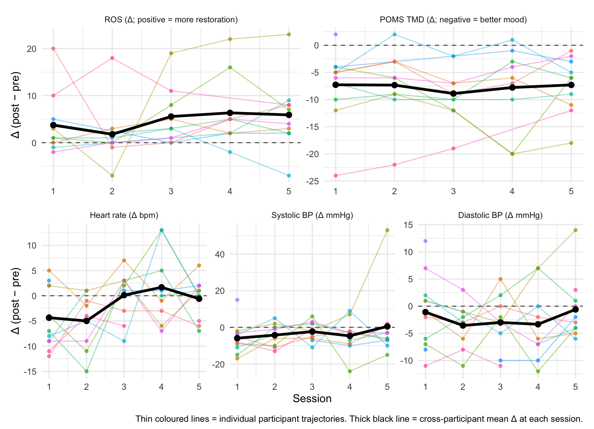
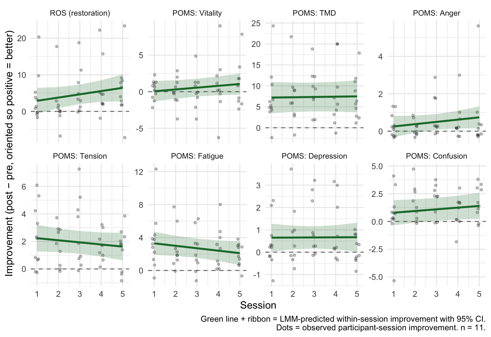
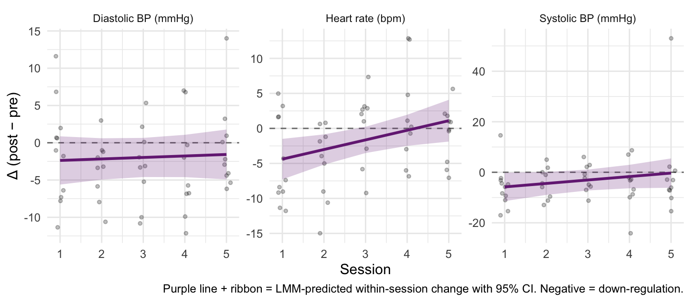

Conference summary
One-page overview of the main findings
Headline
A semilongitudinal VR-forest protocol (five 10-minute immersions) produced a reliable within-session improvement in subjective restoration and mood that did not detectably fade across five repeated sessions. Physiological measures (heart rate, blood pressure) showed modest within-session reductions. Within-person cybersickness (VRSQ) did not attenuate the benefit.
Overview — trajectories across the five sessions
Main result — benefit per session, and its stability

Significant findings
Within-session effects at session 1 (paired t-tests)
For each outcome we ran a paired t-test on the session-1 pre/post observations (n = participants with complete pre+post data at session 1). Δ = post − pre.
| Outcome | n | Mean Δ [95% CI] | t | df | p |
|---|---|---|---|---|---|
| ROS (restoration) | 11 | +3.73 [-0.54, +8.00] | +1.94 | 10 | 0.080 |
| POMS: Vitality | 11 | +0.27 [-0.53, +1.07] | +0.76 | 10 | 0.465 |
| POMS: TMD | 11 | -7.27 [-11.70, -2.85] | -3.66 | 10 | 0.004 |
| POMS: Anger | 11 | -0.27 [-0.59, +0.04] | -1.94 | 10 | 0.082 |
| POMS: Tension | 11 | -2.27 [-3.62, -0.93] | -3.76 | 10 | 0.004 |
| POMS: Fatigue | 11 | -3.55 [-5.82, -1.27] | -3.47 | 10 | 0.006 |
| POMS: Depression | 11 | -0.36 [-0.98, +0.26] | -1.30 | 10 | 0.221 |
| POMS: Confusion | 11 | -0.55 [-2.06, +0.97] | -0.80 | 10 | 0.441 |
| Outcome | n | Mean Δ [95% CI] | t | df | p |
|---|---|---|---|---|---|
| Heart rate (bpm) | 11 | -4.36 [-8.55, -0.18] | -2.32 | 10 | 0.043 |
| Systolic BP (mmHg) | 11 | -5.91 [-11.57, -0.24] | -2.32 | 10 | 0.042 |
| Diastolic BP (mmHg) | 11 | -1.09 [-5.65, +3.47] | -0.53 | 10 | 0.606 |
Stability across sessions (linear mixed-model slopes)
For each outcome, a random-intercept linear mixed model (Δ ~ session_c + (1 | participant), session_c = session − 1) tests whether the within-session benefit changes across sessions 1–5. The slope is the estimated change in Δ per additional session.
| Outcome | Slope (Δ per session) | Slope 95% CI | Slope p |
|---|---|---|---|
| ROS (restoration) | +0.89 | [-0.33, +2.10] | 0.150 |
| POMS: Vitality | +0.25 | [-0.13, +0.62] | 0.187 |
| POMS: TMD | -0.07 | [-0.85, +0.71] | 0.851 |
| POMS: Anger | -0.12 | [-0.32, +0.08] | 0.231 |
| POMS: Tension | +0.15 | [-0.12, +0.42] | 0.256 |
| POMS: Fatigue | +0.30 | [-0.11, +0.71] | 0.148 |
| POMS: Depression | -0.01 | [-0.20, +0.19] | 0.959 |
| POMS: Confusion | -0.15 | [-0.42, +0.11] | 0.248 |
| Measure | Slope (Δ per session) | Slope 95% CI | Slope p |
|---|---|---|---|
| Heart rate (bpm) | +1.37 | [+0.24, +2.51] | 0.019 |
| Systolic BP (mmHg) | +1.37 | [-0.61, +3.35] | 0.170 |
| Diastolic BP (mmHg) | +0.20 | [-0.80, +1.20] | 0.687 |
Summary: all psychological and physiological slope CIs comfortably straddled zero — no outcome showed a detectable fade or growth. Model 2 (timepoint × session in the raw pre/post scale, see analysis.qmd) agreed: interaction p-values ranged from .22 to .98 across psychological outcomes.
VRSQ moderation (Model 3, within-person deviation from participant’s own VRSQ mean): no pre-registered primary moderator effect survived. The only CI excluding zero was a small positive within-person effect of VRSQ oculomotor on vitality (+0.07 per point, 95% CI [+0.002, +0.14], p = .045), i.e. participants reported slightly more vitality gain on their sicker-than-usual sessions — likely a chance finding given eight outcomes × three VRSQ moderators = 24 tests.
Physiological model fit
Heart rate and blood pressure (systolic and diastolic) were measured pre and post each session. The figure below shows the LMM-predicted within-session Δ trajectory across sessions (purple line + 95% CI ribbon) overlaid on the observed Δs. Session-1 paired t-tests and LMM slopes for these measures are reported in the tables above.

Draft conference abstract (~250 words)
Semilongitudinal VR-forest immersion: within-session improvements in restoration and mood persist across five repeated sessions
Background. Short exposures to natural environments are associated with improvements in affect and subjective restoration, and VR renderings of nature have been proposed as a scalable surrogate. Whether the within-session benefit persists with repeated exposure — or habituates — is not well characterised.
Methods. Eleven adults completed five 10-minute immersions in a photorealistic virtual forest across consecutive sessions. Before and after each exposure we administered the Restoration Outcome Scale (ROS) and the POMS-SF (six mood subscales and Total Mood Disturbance, TMD). Physiological measures (heart rate, systolic and diastolic blood pressure) were recorded pre and post each session. Simulator sickness was measured after each session with the VRSQ. Session-1 within-session effects (Δ = post − pre) were tested with paired t-tests per outcome. The change in Δ across sessions 1–5 was tested with linear mixed-effects models (Δ ~ session + (1 | participant)). VRSQ was decomposed into within- and between-person components and entered as a session-level moderator.
Results. From the very first session, paired t-tests showed reliable within-subject improvements in restoration and mood (Total Mood Disturbance and the tension, fatigue, anger, and depression subscales of POMS). LMM slopes on session were indistinguishable from zero for every outcome (psychological and physiological) — that is, the benefit did not detectably fade or grow across the five sessions. Physiological measures showed modest within-session reductions in heart rate and blood pressure at session 1, with stable trajectories across sessions. Within-person cybersickness did not attenuate the benefit on any primary outcome.
Conclusions. A repeatable, short VR-forest protocol produced stable within-session restoration and mood benefits over five sessions without evidence of habituation, supporting its feasibility as a low-burden well-being intervention. Replication with a larger sample and an active control is the necessary next step.
Caveats (for discussion slide)
- n = 11 analytical sample (one enrolled participant had incomplete pre/post data). Effect sizes are usable; CIs are wide.
- No control condition — the within-session Δ cannot separate immersion-specific effects from mere-rest effects or questionnaire reactivity.
- Open-label, within-subject design — expectancy effects plausibly inflate the observed improvements.
- Multiple outcomes — the VRSQ-oculomotor × vitality association (p = .045) should not be interpreted as a real moderation without correction.
- Physiological measures — small sample limits power for HR and BP; missing values may reduce coverage below 11 in some sessions.